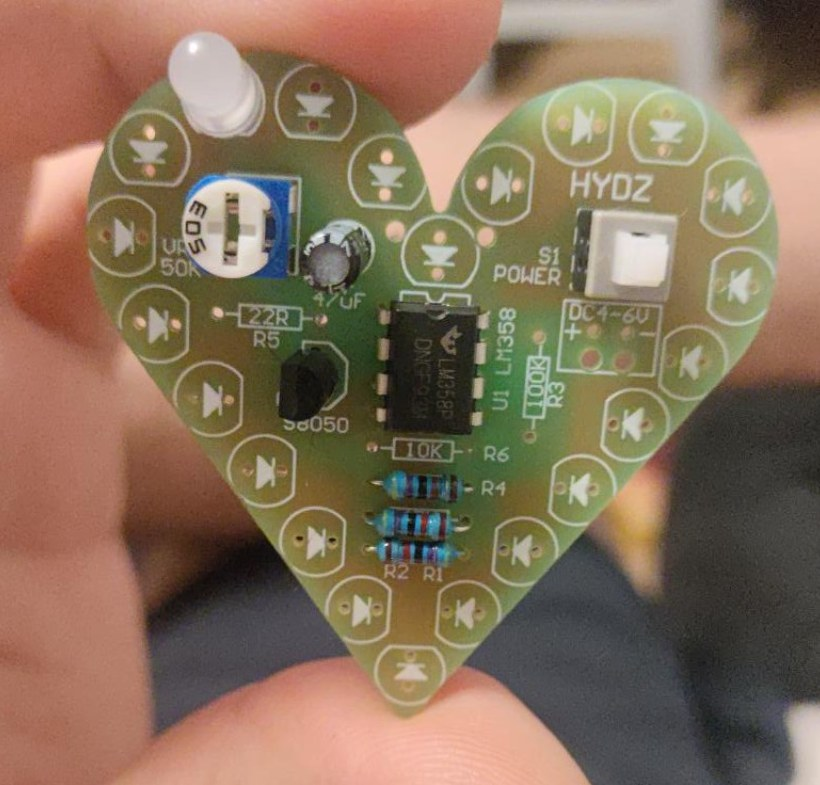
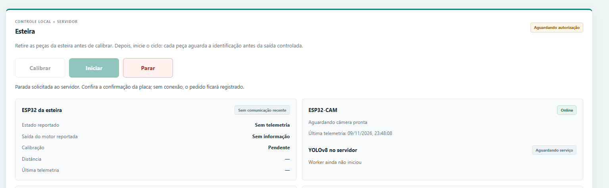

Fotografia · Eletrônica
Lendo uma placa de LEDs
Antes de colocar um LED, é preciso ler a marcação na placa. Nesta atividade, a dúvida era qual perna correspondia a cada lado do símbolo. A barra indica o cátodo do LED.
Caderno de registros
Do projeto social do primeiro ano aos testes de eletrônica, estes são alguns registros que marcaram meu percurso no Senac.

Fotografia · Eletrônica
Antes de colocar um LED, é preciso ler a marcação na placa. Nesta atividade, a dúvida era qual perna correspondia a cada lado do símbolo. A barra indica o cátodo do LED.

Captura de tela · Mini Fábrica
O painel mostrava a câmera online e a esteira sem telemetria recente. Esse registro ajuda a separar o diagnóstico da câmera do diagnóstico do motor e da conexão do controlador.
2024 · Projeto social
Essa pergunta guiou as entrevistas do nosso grupo. Conversamos com estudantes sobre a rotina e as formas de deslocamento. Depois, reunimos os relatos em um blog para mostrar as diferentes realidades de quem frequenta a mesma escola.
2025 · Programação
Chegar à 3ª fase da Olimpíada Brasileira de Informática foi uma conquista do segundo ano. O reconhecimento da Sociedade Brasileira de Computação está registrado no meu currículo, com data de 18 de novembro de 2025.